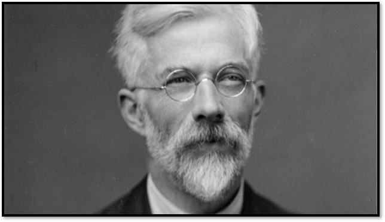

Resenha do Livro: Uma Senhora Toma Chá - Capítulo 4
Edição especial: Uma senhora toma chá - resenha do capítulo 4
- Que cada gole desperte uma nova ideia.
- Que cada script abra uma nova conversa.
- Que o Café com R se torne um ponto de encontro nosso.
Eu fiz a leitura de novo dos capítulos 4 e 5 na praia! E como o tempo está chuvoso por aqui (13/08), estava um deserto.

O gole da semana
Pessoal, antes de começar quero dizer uma coisa: esse capítulo foi o que mais me prendeu até agora.
Não pela matemática, tá! Pelo FISHER!!!

Fisher é um nome que todo mundo que trabalha com estatística conhece. Mas o personagem de verdade, o homem que chegou a Rothamsted em 1919 com quase nenhum recurso, com a visão comprometida desde a infância e com o temperamento mais difícil da história da estatística, esse Fisher não aparece nos livros de método.
Aparece aqui.
Antes de ser o fundador do desenho experimental, QUE EU AMO, NÉ….. Fisher foi um jovem pesquisador mal pago, trabalhando num arquivo cheio de dados velhos, numa estação agrícola no interior da Inglaterra. E mesmo assim, produziu mais do que qualquer um ao redor.
A resenha
O título do capítulo
O capítulo 4 se chama “Revolver um monte de estrume”. Não é metáfora. É o que Fisher fazia.
Nessa parte eu tive que rir sozinha!
Rothamsted é uma estação experimental agrícola fundada em 1843 em Harpenden, Hertfordshire. Quando Fisher chegou, em 1919, havia quase oitenta anos de registros acumulados sobre experimentos com fertilizantes em campos de trigo e outras culturas. Dados de colheitas, análises de solo, registros climáticos.
Ninguém havia conseguido extrair conclusões confiáveis de nada disso.
O problema não era a quantidade de dados. Era que os dados haviam sido coletados sem nenhum planejamento que permitisse separar os efeitos que se queria medir dos efeitos que existiam no ambiente. As variações de clima entre os anos eram maiores do que qualquer efeito dos fertilizantes. Os dois estavam misturados, sem separação possível.
Fisher chamou esse problema de confundimento. E passou os anos seguintes da vida tentando resolvê-lo.
Quem era Fisher antes de Rothamsted
Ronald Aylmer Fisher nasceu em 1890. Teve uma infância marcada pela miopia severa, tão intensa que os médicos proibiam o uso de luz artificial para leitura. Sua mãe morreu quando ele tinha catorze anos.
Estudou em Cambridge, onde desenvolveu aptidão incomum para matemática e biologia. Depois de se formar, tentou entrar para o Exército na Primeira Guerra. Foi rejeitado por causa da visão. Trabalhou como professor, como contador, deu aulas em escola secundária.
Era brilhante. Estava no lugar errado.
Chegou a Rothamsted com trinta anos, depois de anos em trabalhos que não eram para ele, para um cargo que pagava pouco e prometia ainda menos. E encontrou exatamente o que precisava: um problema real, com dados reais, sem solução.
Salsburg descreve Fisher como uma pessoa difícil. Impaciente, combativo, incapaz de aceitar crítica sem revidar. Que criou inimigos com a mesma facilidade com que criou teorias.
Nenhum desses traços diminui o que ele produziu. Mas ajuda a entender o que vem a seguir.
A guerra com Karl Pearson
Você sabia disso?
Karl Pearson tinha trinta anos a mais que Fisher. Era o estatístico mais poderoso da Inglaterra quando Fisher chegou. Dirigia o Biometrika, o principal periódico de estatística da época, e o Galton Laboratory em Londres.
Pearson havia construído ferramentas fundamentais: o coeficiente de correlação, o qui-quadrado, as bases da regressão múltipla. Era um cientista rigoroso e prolífico.
E também controlava o campo com mão firme.
Fisher submeteu um artigo ao Biometrika em 1915. O artigo tratava da distribuição amostral do coeficiente de correlação e corrigia um erro num trabalho anterior do próprio Pearson.
Pearson publicou o artigo, mas acrescentou uma nota editorial no final dizendo que o resultado de Fisher já havia sido obtido por ele mesmo, em formulação diferente, e que as duas abordagens eram equivalentes.
Não eram. Fisher estava certo. Pearson estava errado. E Pearson sabia disso.
A relação entre os dois nunca se recuperou.
A partir dali, Fisher publicou cada vez menos no Biometrika. Pearson rejeitou trabalhos, publicou críticas, usou o periódico como instrumento. Fisher respondeu em outros veículos, com a mesma intensidade.
Salsburg não romantiza esse conflito. Descreve dois homens que tinham razões intelectuais reais para discordar e que, além disso, simplesmente não se suportavam.
E no meio dessa guerra, enquanto os dois trocavam farpas em periódicos, Fisher em Rothamsted estava construindo algo que mudaria os dois campos que Pearson havia fundado.
O que Fisher descobriu nos dados velhos
Fisher passou os primeiros anos em Rothamsted lendo arquivos.
Quase oitenta anos de registros. Dados de colheitas, análises de solo, anotações sobre clima, registros de fertilizantes aplicados. Tudo acumulado sem um sistema que permitisse análise conjunta.
E encontrou o problema central: os experimentos não haviam sido desenhados para separar o que se queria medir do que estava no caminho.
Duas parcelas de terra lado a lado recebem fertilizantes diferentes. Mas o solo não é homogêneo. Um lado pode ter mais umidade, mais profundidade, mais matéria orgânica. O fertilizante que parece mais eficaz pode ser apenas aquele que caiu na parcela com melhor solo.
Fisher percebeu que a solução não estava nos dados existentes. Estava no modo de coletar dados novos.
Se você aleatoriza a alocação dos tratamentos entre as parcelas, as diferenças de solo se distribuem por acaso entre os grupos. Nenhum fertilizante fica sistematicamente nas parcelas melhores. O acaso, que era o problema, vira a solução.
Isso é o que chamamos de randomização. E foi Fisher quem formalizou o princípio.
A ideia parece simples agora. Em 1920, era uma ruptura com tudo que se fazia.
O que Rothamsted produziu
Entre 1919 e 1933, Fisher publicou os trabalhos que definem boa parte do que chamamos de estatística inferencial.
A análise de variância, o método que permite separar a variação explicada pelos tratamentos da variação residual. O conceito de graus de liberdade. A distribuição F, que leva o inicial do seu nome. O princípio da replicação. O conceito de bloco, que permite controlar variação do ambiente sem randomização completa.
Tudo isso saiu de Rothamsted. De um arquivo cheio de dados velhos. De campos de trigo. De um homem com visão ruim que havia passado anos no lugar errado.
Salsburg escreve que Fisher havia encontrado, nos dados agrícolas de Rothamsted, o mesmo problema que apareceria décadas depois em ensaios clínicos, em psicologia experimental, em economia. O campo de trigo era um laboratório para tudo.
O que fica desse capítulo
O capítulo 4 é sobre o que acontece quando uma mente certa encontra o problema certo no momento certo.
Fisher não chegou a Rothamsted com as respostas. Chegou com a disposição de olhar para os dados sem saber o que ia encontrar. E o que encontrou foi a ausência de método, que é o tipo de problema mais difícil de resolver porque quem está dentro dele geralmente não consegue ver.
Pessoal, eu penso muito nisso quando começo uma análise. O quanto do que encontro nos dados é real e o quanto é consequência de como os dados foram coletados? Essa pergunta que Fisher colocou em 1919 não ficou em 1919. Ela está em cada projeto de análise que fazemos.
E a guerra com Pearson? Ela continuou. Mas isso já é o próximo capítulo.
O que estou acompanhando
Uma senhora toma chá - David Salsburg: Para quem quer entender estatística pelas pessoas que a construíram, sem fórmulas empilhadas e sem jargão onde ele não é necessário.
Statistical Methods for Research Workers - R.A. Fisher (1925): O primeiro dos grandes livros de Fisher, onde a análise de variância aparece pela primeira vez de forma sistemática. Disponível em: archive.org
Próxima edição
Capítulo 5 - O teste de significância
O capítulo 5 entra no coração do método de Fisher: o que significa um resultado ser estatisticamente significativo, de onde veio o valor de 0,05, e por que essa escolha ainda divide a estatística hoje.
Gostou desta edição?
Assine o Café com R e receba conteúdo de R, Estatística e Ciência de Dados toda semana.